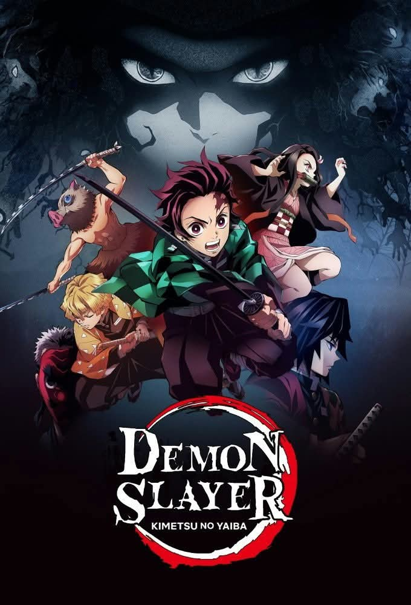

UNOFFICIAL FAN STORY · CHAPTER 01
Demon Slayer
A quiet mountain village is threatened by a strange night-time presence, and a compassionate traveler learns that bravery also means protecting the vulnerable.
Chapter One: A New Beginning
Wisteria lanterns glowed along the mountain path as Sora reached the village. Each evening, the lights went out one by one, and villagers heard footsteps outside empty homes.
Sora followed the trail with a local herbalist, carrying only a lantern and a wooden charm. They found a frightened child hiding in an abandoned shrine. The shadow that had terrified the village was a wounded traveler, lost and unable to speak clearly.
When a storm broke, Sora shielded the traveler from the rain while the herbalist prepared medicine. By dawn, the stranger could explain the warning he had tried to deliver: a fallen tree blocked the mountain bridge.
The village repaired the bridge together. Sora left knowing that compassion could reveal the truth behind even the darkest night.
This is an unofficial, original fan-made story and is not affiliated with the official creators or publishers.